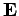

Inhalt Index DeskTop Bronstein

 Algebra und Diskrete Mathematik Klassische algebraische Strukturen Lie-Gruppen Infinitesimale Drehungen
Algebra und Diskrete Mathematik Klassische algebraische Strukturen Lie-Gruppen Infinitesimale Drehungen


Die Matrizen
 |
(5.136) |
vermitteln die Transformation eines Ortsvektors  des dreidimensionalen Raumes bei Drehungen mit dem Drehwinkel
des dreidimensionalen Raumes bei Drehungen mit dem Drehwinkel  um die Achse eines kartesischen Koordinatensystems.
um die Achse eines kartesischen Koordinatensystems.
Alle dreidimensionalen Drehungen (eigentliche Drehungen ohne Inversion) bilden die dreiparametrige spezielle orthogonale Gruppe ; zweidimensionale Drehungen sind eine einparametrige ABELsche Untergruppe SO(2) von .
Eine Entwicklung der trigonometrischen Funktionen in den Matrixelementen von ergibt für infinitesimale Drehungen eine Liniearisierung der Transformation nach
| (5.137) |
wobei  die dreidimensionale Einheitsmatrix bezeichnet,  eine Matrix mit Elementen mindestens der Ordnung und die Matrizen
eine Matrix mit Elementen mindestens der Ordnung und die Matrizen
eine Darstellung der infinitesimalen Generatoren der LIE-Gruppe SO(3) liefern. Die Elemente der lokalen LIE-Gruppe sind die Matrizen
| (5.139) |
deren Elemente außerhalb der Hauptdiagonalen sich nur wenig von 0 unterscheiden. Um zur globalen LIE-Gruppe SO(3) aller endlichen dreidimensionalen Drehungen R zu gelangen, sind infinitesimale Drehungen wiederholt auszuführen:
| (5.140) |
Anstelle der Parameter s1,s2,s3 können auch der Drehwinkel  und die drei Komponenten a1,a2,a3 eines Einheitsvektors
und die drei Komponenten a1,a2,a3 eines Einheitsvektors  in Richtung der Drehachse durch den Koordinatenursprung eingeführt werden, um das Element der Drehgruppe zu bestimmen:
in Richtung der Drehachse durch den Koordinatenursprung eingeführt werden, um das Element der Drehgruppe zu bestimmen:
| (5.141) |